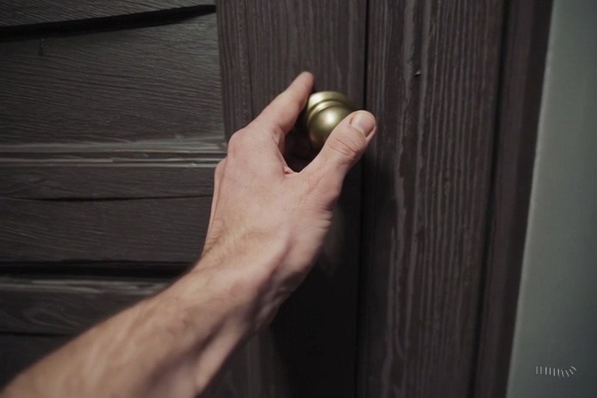
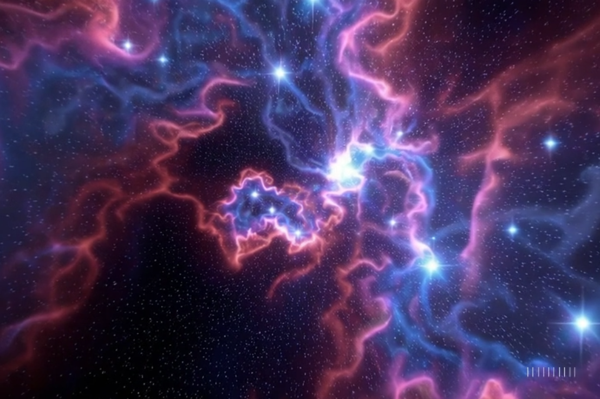

🤝 Sora Blend 기능 마스터하기
서로 다른 두 개의 영상을 마법처럼 연결하는 '블렌드(Blend)' 기능을 배워보세요. 이 가이드를 통해 시공간을 초월하는 창의적인 영상을 만들 수 있습니다.
🤝 Blend 기능이란?
Blend는 영상 A의 끝부분과 영상 B의 시작 부분을 분석하여, 그 사이를 채워줄 새로운 전환(Transition) 장면을 AI가 직접 생성해주는 기능입니다. 전혀 다른 두 공간이나 상황을 마치 원래부터 하나였던 것처럼 매끄럽게 이어 붙일 수 있습니다.
핵심 특징
- 핵심: 영상과 영상 사이의 '다리'를 놓아주는 기능
- 장점: 시공간을 초월하는 초현실적이거나 창의적인 장면 전환을 손쉽게 구현 가능
- 원리: 두 영상의 시각적 요소를 분석하여, 그럴듯한 중간 과정을 생성하여 연결
🎬 Blend 기능 연습 예제
미션: 문을 열면 우주가 나타나는 장면 만들기
전혀 다른 두 공간이 어떻게 자연스럽게 연결되는지 직접 확인해 보세요.
[1단계] 첫 번째 영상 (Video A)
이야기의 시작, 전환의 출발점이 될 영상을 생성합니다.
"A close-up shot of a person's hand turning a metallic doorknob and slowly opening an old wooden door."

[2단계] 두 번째 영상 (Video B)
전환 후 도착하게 될 새로운 공간 영상을 생성합니다.
"A breathtaking view of a colorful nebula and sparkling stars in deep space, cinematic, 4k."

[3단계 & 4단계] Blend 적용 및 최종 결과
Sora의 Blend 기능을 사용하여 Video A와 Video B를 연결합니다. 문이 열리면서 문틈의 공간이 서서히 우주로 변하는, 마법 같은 전환 영상이 완성됩니다.
[결과 영상 예상: 문이 열리며 우주 공간으로 전환되는 장면]
⚠️ 주의 사항 및 PRO-TIP
- 시각적 유사성 활용: 두 영상의 색감, 구도, 피사체의 형태가 비슷할수록 더 자연스러운 결과물을 얻을 수 있습니다. (예: 푸른 바다 영상 → 푸른 하늘 영상)
- 카메라 움직임 고려: 한 영상은 정적인데 다른 영상은 카메라가 빠르게 움직인다면 전환이 어색할 수 있습니다. 가능한 비슷한 카메라 움직임을 가진 영상을 연결하는 것이 좋습니다.
- 단순한 배경에서 시작: 처음 연습할 때는 배경이 비교적 단순한 영상끼리 연결해 보세요. 복잡한 배경보다 AI가 특징을 분석하고 연결하기 쉽습니다.
- 프롬프트로 전환 힌트 주기: Blend 기능을 실행할 때, "The door opens to reveal a galaxy" 와 같이 전환 과정을 묘사하는 프롬프트를 추가로 입력하면 더 좋은 결과를 유도할 수 있습니다.
- 반복과 실험은 필수: 첫 시도에 완벽한 결과가 나오지 않을 수 있습니다. 시작 영상과 종료 영상을 약간씩 다른 것으로 바꿔보거나, 프롬프트를 수정하며 여러 번 실험해 보는 것이 중요합니다.